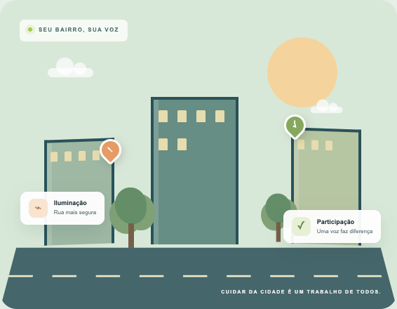

CIDADANIA QUE TRANSFORMA
Uma cidade melhor começa quando alguém participa.
Viu um problema no seu bairro? Registre, acompanhe e ajude a dar visibilidade ao que precisa mudar.
Participação coletiva
Pequenas ações geram mudanças reais.
Pequenas ações geram mudanças reais.

ACOMPANHE DE PERTO
0ocorrências registradas
0em aberto ou análise
0resolvidas
FAÇA PARTE DA MUDANÇA
Quero participar
Você conhece seu bairro melhor do que ninguém.
Compartilhe o que precisa de atenção. Acompanhar começa com registrar.